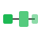

ADS · Requisitos no funcionales
Análisis RNF de Spotify
Disponibilidad, rendimiento, consistencia e interoperabilidad aplicados a tres capacidades clave del producto.
Explorar análisis
CDN global
Failover y edge cercano al usuario.
HLS / DASH
Streaming adaptativo multibitrate.
Caché + ML
Prefetch inteligente offline-first.
Sistema operativo 24/7 sin interrupciones.
Métrica: en cambios de red.
Ajuste dinámico de calidad según ancho de banda.
Métrica: en cambio de bitrate.
Manejo de picos masivos de usuarios concurrentes.
Métrica: objetivo.
Escenarios arquitectónicos
- Fuente
- Usuario en tren con señal intermitente.
- Estímulo
- Cambio WiFi → 4G con pérdida de 3–5 s.
- Respuesta
- Música continúa sin pausas (buffer precargado).
- Medida
- < 0,5 s silencio, 0 interrupciones perceptibles.
Relevancia
- 78 % de usuarios escuchan en movilidad.
- Interrupciones generan abandono inmediato.
- Competencia intensa: migración a servicios más estables.
- Pausas > 3 s percibidas como fallo.
Trade-off: Disponibilidad vs Rendimiento
Antes
Pre-cargar 5 min consume más batería.
→
Solución
Buffer adaptativo (30 s WiFi, 15 s 4G).
Resultado: ~99,5 % disponibilidad, −40 % consumo.
Implicaciones arquitectónicas
- CDN distribuida global con failover automático
- Streaming adaptativo (HLS/DASH, múltiples bitrates)
- Caché local inteligente con ML
- Arquitectura offline-first
Tácticas
Circuit breaker + fallback
3 errores → CDN alternativa; reduce latencia ~70 % en alta demanda.
Adaptive Bitrate (ABR)
Throughput cada 2 s + DASH; ~95 % menos interrupciones por buffering.
Ejemplo conceptual (buffer adaptativo)
function bufferSeconds(network) {
return network === 'wifi' ? 30 : 15;
}

Pipeline batch
Spark nocturno → Cassandra.
Caché L1–L3
Redis, Memcached, Cassandra.
Modelo híbrido
CF offline + bandits online.
Tiempo de respuesta para experiencias como Discover Weekly.
Métrica: .
Correctitud de las sugerencias respecto al gusto del usuario.
Métrica: relevantes; .
Escenarios arquitectónicos
- Fuente
- Usuario abre Discover Weekly.
- Estímulo
- Solicitud de playlist de 30 canciones.
- Respuesta
- Playlist en < 800 ms (batch precalculado).
- Medida
- p95 < 800 ms, p99 < 1,5 s, > 100 K req/s.
- Fuente
- Usuario con historial rock alternativo.
- Estímulo
- Algoritmo genera 30 canciones.
- Respuesta
- Mínimo 24/30 relevantes (80 %).
- Medida
- Precisión > 80 %, recall > 70 %, skip < 30 %.
Relevancia
- > 1 s se percibe como lento.
- Recomendaciones rápidas ↑ retención ~23 %.
- Real-time es ~40× más caro que batch.
- Precisión ↑ tiempo de escucha ~35 %.
Trade-offs
Rendimiento vs precisión
Modelos ML complejos: 800 ms → ~5 s de latencia.
→
Solución
Híbrido: modelo complejo offline + simple online.
~80 % precisión con < 800 ms.
Escalabilidad vs personalización
Personalización fina no escala a 500 M usuarios.
→
Solución
Clustering en ~1000 segmentos.
−95 % cómputo, ~75 % precisión.
Implicaciones arquitectónicas
- Pipeline batch Lambda (Spark nocturno → Cassandra)
- Caché multi-nivel (L1 Redis, L2 Memcached, L3 Cassandra)
- Modelo híbrido (collaborative filtering + contextual bandits)
- Feature store con p99 < 10 ms
Tácticas
Pre-computación + fallback
Nocturno + fallback demográfico; −90 % costos, < 800 ms para 99,5 %.
Multi-armed bandit
Thompson sampling 80/20; +40 % diversidad, +12 % retención a 6 meses.
Patrón conceptual (precálculo)
# Pseudocódigo nightly job
schedule('0 2 * * *', () => {
precomputePlaylists(users);
});
Event sourcing
Comandos inmutables en Kafka.
CRDT
Convergencia sin bloqueos fuertes.
WebSocket
Canal persistente < 100 ms.
Compatibilidad entre ecosistemas heterogéneos.
Métrica: ; ; .
Sincronización de estado distribuido entre clientes.
Métrica: ; .
Escenarios arquitectónicos
- Fuente
- Control desde iPhone, transferencia a Sonos.
- Estímulo
- Play/pause, volumen, cambio de tema.
- Respuesta
- < 500 ms en dispositivos con protocolos distintos.
- Medida
- 300+ dispositivos, < 500 ms, < 1 % error.
- Fuente
- Varios clientes modifican estado compartido.
- Estímulo
- 5 canciones añadidas + cambio de volumen.
- Respuesta
- Estado idéntico en todos los dispositivos.
- Medida
- Eventual < 2 s, 0 pérdidas, resolución automática.
Relevancia
- 50+ fabricantes, protocolos propietarios.
- Expectativa de control unificado sin fricción.
- Diferenciación frente a competidores.
- Complejidad distribuida sin un único centro.
Trade-offs
Consistencia vs disponibilidad
Consistencia fuerte bloquea dispositivos lentos.
→
Solución
Consistencia eventual (local + sync).
99,9 % disponibilidad; < 2 s en 95 % casos.
Interoperabilidad vs rendimiento
Múltiples protocolos añaden overhead.
→
Solución
Capa de abstracción con adaptadores ligeros.
< 500 ms con ~50 ms overhead.
Implicaciones arquitectónicas
- Event sourcing (Kafka)
- CRDT para convergencia
- WebSocket bidireccional
- Device registry service
Tácticas
Operational Transformation (OT)
Cola concurrente: operaciones transformadas; 0 pérdidas.
Health check + auto-discovery
Heartbeat 10 s, offline 30 s, mDNS; −85 % frustración.
Esquema de evento (conceptual)
{
"type": "QUEUE_PATCH",
"vectorClock": { "deviceA": 12, "deviceB": 9 }
}
-
1
Reproducción continua
Disponibilidad y ABR como base de la confianza del usuario.
-
2
Recomendaciones
Rendimiento y precisión vía batch, caché y modelos híbridos.
-
3
Multidispositivo
Interoperabilidad y consistencia eventual en tiempo real.
- Disponibilidad y rendimiento son críticos: ~95 % abandono por interrupciones.
- Consistencia eventual suele bastar: tolerancia 1–2 s sin bloqueos.
- Pre-cómputo reduce latencia ~90 % y costos ~80 %.
- Interoperabilidad exige inversión continua en 300+ dispositivos.
- Trade-offs inevitables: priorizar según contexto de negocio.
Complementarios
Conflicto
Misma dimensión
| RNF |
Disponibilidad |
Rendimiento |
Consistencia |
Interoperabilidad |
| Disponibilidad |
|
|
|
|
| Rendimiento |
|
|
|
|
| Consistencia |
|
|
|
|
| Interoperabilidad |
|
|
|
|
Selecciona una celda
La explicación del cruce aparecerá aquí.